물류관리사-2교시 (2018-07-21 기출문제)
1과목: 보관하역론
1. 제품의 물리적 성질에 근거한 보관 원칙으로 옳은 것을 모두 고른 것은?
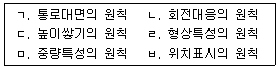
- ㄱ, ㄴ
- ㄴ, ㄷ
- ㄷ, ㄹ
- ㄹ, ㅁ
- ㅁ, ㅂ
(정답률: 79%)

2. 보관의 기능으로 옳지 않은 것은?
- Link와 Link를 연결하는 기능
- 고객서비스의 접점 기능
- 집산, 분류, 구분, 조합, 검사 장소의 기능
- 재화의 물리적 보존과 관리 기능
- 제품에 대한 장소적 효용 창출 기능
(정답률: 58%)
3. 다음의 설명에 해당하는 물류시설은?
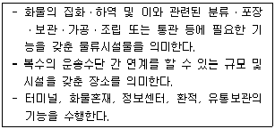
- 물류센터
- CFS(Container Freight Station)
- 복합물류터미널
- 공동집배송단지
- 데포(Depot)
(정답률: 81%)
4. 다음 중 항만 및 부두에서 사용하는 항만 기기 또는 시설이 아닌 것은?
- 트랜스포터(Transporter)
- 펜더(Fender)
- 계선주(Bitt)
- 안벽(Quay)
- 캡스턴(Capstan)
(정답률: 62%)
5. ICD(Inland Container Depot)에 관한 설명으로 옳지 않은 것은?
- ICD는 주로 항만터미널과 내륙운송수단과의 연계가 편리한 지역에 위치한다.
- ICD는 장치보관기능, 수출입 통관기능과 선박의 적하 및 양하기능을 수행함으로 써 육상운송 수단과의 연계를 지원한다.
- ICD는 항만지역에 비해 창고ㆍ보관시설용 토지 취득이 쉽고 시설비가 절감되어 보관료가 저렴하다.
- ICD는 공적권한과 공공설비를 갖추고 있다.
- ICD는 운송거점으로서 대량운송 실현과 공차율 감소를 통해 운송을 합리화하고 신속한 통관을 지원한다.
(정답률: 72%)
6. 다음이 설명하는 물류시설의 민간투자사업 방식이 올바르게 연결된 것은?
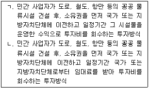
- ㄱ: BTL(Build Transfer Lease), ㄴ: BTO(Build Transfer Operate)
- ㄱ: BTO(Build Transfer Operate), ㄴ: BOO(Build Own Operate)
- ㄱ: BOT(Build Operate Transfer), ㄴ: BTL(Build Transfer Lease)
- ㄱ: BOO(Build Own Operate), ㄴ: BTL(Build Transfer Lease)
- ㄱ: BTO(Build Transfer Operate), ㄴ: BTL(Build Transfer Lease)
(정답률: 63%)
7. 보세구역에 관한 설명으로 옳지 않은 것은?
- 보세구역은 '세금이 보류된 구역'으로 수출입화물의 관세를 지불하지 않고 운영되는 특별지역이다.
- 보세장치장은 '항만법'에 근거하며, 외국화물을 취급하는 장소이다.
- 보세창고는 외국물품을 장치하기 위한 구역으로 세관장의 허가를 받은 경우에는 통관되지 않은 내국물품도 장치가 가능하다.
- 보세장치장에서는 특정무역상을 위해 외국화물을 양륙하여 반출, 반입, 장치할 수 있다.
- 보세구역은 수출입화물의 집화, 분류, 보관, 운송을 위해 세관장이 지정하거나 특허한 장소이다.
(정답률: 63%)
8. A회사의 공장과 수요지의 수요량과 좌표가 다음과 같을 때, 무게중심법에 의한 최적의 신규 물류센터 입지는? (단, 계산한 값은 소수점 첫째자리에서 반올림함)
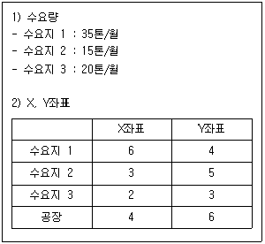
- X : 3, Y : 4
- X : 4, Y : 5
- X : 4, Y : 6
- X : 5, Y : 5
- X : 6, Y : 4
(정답률: 64%)
9. 물류센터 설계 시에는 랙(Rack)의 1개 선반 당 적재하중기준을 고려해야한다. 이 기준에 맞게 화물을 적재한 것은?(순서대로 중량 랙, 중간 랙, 경량 랙)
- 700kg, 400kg, 180kg
- 600kg, 350kg, 140kg
- 500kg, 200kg, 160kg
- 400kg, 300kg, 200kg
- 300kg, 200kg, 170kg
(정답률: 71%)
10. 다음은 연간 처리물동량 1만 톤 기준, 물류시설 A, B, C 세 곳의 연간 고정비와 변동비의 소요 예산이다. 물류시설 입지선정에 관한 설명으로 옳은 것은?
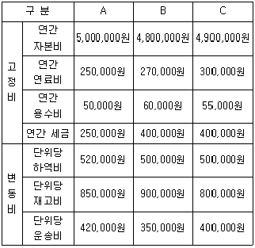
- 연간 처리물동량 1만 톤일 때, 총비용면에서 가장 경제적인 물류시설은 C이다.
- 연간 처리물동량 2만 톤일 때, 총비용면에서 가장 경제적인 물류시설은 B이다.
- 연간 처리물동량 3만 톤일 때, 총비용면에서 가장 경제적인 물류시설은 A이다.
- 연간 처리물동량이 증가할수록, 총비용면에서 가장 경제적인 물류시설은 A이다.
- 연간 처리물동량이 1만 톤일 때는 고정비만 비교하여 물류시설 입지를 선정한다.
(정답률: 55%)
11. 다음 그림에 해당하는 저장 중심형 창고 내 흐름 유형에 관한 설명으로 옳은 것은?
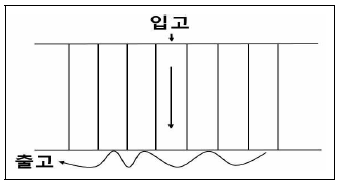
- 재고 종류가 많아질 때, 피킹 순회거리를 짧게 하기 위해 동일품목을 폭은 좁게, 깊이는 깊게 적치하는 유형
- 선입선출이 많지 않은 소품종다량품의 경우, 적치장 안쪽에서 순서대로 적치해 놓고 출고 시 가까운 곳에서부터 출고하는 유형
- 선입선출이 필요하게 될 때, 2열 또는 3열의 병렬로 정리하여 입ㆍ출고하는 유형
- 물품을 대량으로 쌓아두면 피킹의 순회거리가 길어지므로 피킹장과 격납장을 분리하여 2단으로 적치하는 유형
- 피킹용 선반 상단부에 예비물품을 파렛트로 적치해두었다가, 선반 하단부가 비게 되면 상단부의 파렛트를 하단부로 옮겨놓고 상단부에 새 파렛트를 보충하는 유형
(정답률: 47%)
12. 배송센터 구축의 이점으로 옳지 않은 것은?
- 수송비 절감: 수요지에 가까운 배송센터까지 대형차로 수송하고 고객에게는 소형차로 배송하므로 비용이 절감된다.
- 배송 서비스율 향상: 배송센터에서 고객에게 배송하는 것이 공장에서 고객에게 배송하는 것보다 리드타임이 단축된다.
- 납품작업의 합리화: 백화점이나 양판점은 배송센터를 통해 납품작업을 합리화시킨다.
- 교차수송의 발생: 각각의 공장에서 제품을 소비지까지 개별 수송하므로 손상, 분실, 오배송이 감소한다.
- 상물분리의 실시: 배송센터를 활용함으로써 각 영업지점은 상류활동에 전념할 수 있다.
(정답률: 74%)
13. 랙(Rack)에 관한 설명으로 옳지 않은 것은?
- 파렛트 랙(Pallet Rack): 포크리프트를 사용하여 파렛트 단위 혹은 선반 단위로 셀마다 격납 보관하는 설비
- 적층 랙(Mezzanine Rack): 선반을 다층식으로 겹쳐 쌓고 현재 사용하고 있는 높이에서 천장까지의 사이를 이용하는 보관 설비
- 회전 랙(Carousel Rack): 입체형이며 소품종 대량 상품을 파렛트 단위로 보관하는데 적합한 설비
- 플로우 랙(Flow Rack): 격납 부분에 레일을 달아 전체가 비스듬히 기울어지게 만든 설비
- 드라이브 인 랙(Drive-in Rack): 지게차를 가지고 직접 격납 출고를 행하는 설비
(정답률: 78%)
14. 자재소요계획(MRP: Material Requirement Planning)의 특성에 해당하는 것을 모두 고른 것은?
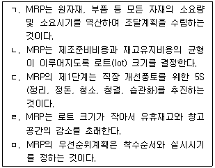
- ㄱ, ㄴ, ㄷ
- ㄱ, ㄴ, ㅁ
- ㄱ, ㄷ, ㄹ
- ㄴ, ㄹ, ㅁ
- ㄷ, ㄹ, ㅁ
(정답률: 59%)
15. A업체는 경제적주문량(EOQ: Economic Order Quantity)모형을 이용하여 아래와 같은 조건으로 발주량을 결정하고자 한다. 연간 수요량이 170 % 증가하고 연간 단위당 재고유지비용이 10 % 감소한다고 할 때, 증감하기 전과 비교하면 EOQ는 얼마나 변동되는가? (√2=1.414, √3=1.732, √4=2.236 이며, 계산한 값은 소수점 첫째자리에서 반올림함)
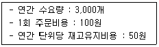
- 14 % 증가
- 17 % 증가
- 22 % 증가
- 62 % 증가
- 73 % 증가
(정답률: 46%)
16. 크로스 도킹(Cross Docking)에 관한 설명으로 옳지 않은 것은?
- 파렛트 크로스 도킹은 일일 처리량이 적을 때 적합한 방식이다.
- 파렛트 크로스 도킹은 기계설비와 정보기술의 도입이 필요하다.
- 효율적인 크로스 도킹을 위해서는 공급처와 수요처의 정보공유가 필요하다.
- 크로스 도킹은 창고관리 시스템 영역 중 입ㆍ출고 관련 기능에 해당한다.
- 크로스 도킹의 목적은 유통업체에서 발생할 수 있는 불필요한 재고를 제거하는 것이다.
(정답률: 70%)
17. 유통창고에 관한 설명으로 옳지 않은 것은?
- 유통창고는 원자재와 중간재가 주요 대상 화물이다.
- 유통창고는 자가창고에서 시작하여 공동창고나 배송센터로 발전하고 있다.
- 유통창고는 수송면에서 정형적 계획수송이 가능하다.
- 유통창고는 도매업 및 대중 양판점의 창고가 대표적이다.
- 유통창고는 신속한 배송과 대량생산체제에 대응할 수 있다.
(정답률: 71%)
18. 2010년부터 2018년까지 A지역의 인구수와 B제품 보관량이 다음과 같을 때, 인구수 변화에 따른 보관량을 예측하고자 한다. 2019년 A지역 인구수가 6.3천 명으로 예측되었을 때, 단순선형회귀분석법을 통해 2019년 B제품 보관량을 예측한 것은? (단, 2010년부터 2018년까지 인구수와 보관량의 회귀식은 y=0.9886x-0.8295이며, 결정계수(R2)는 0.9557로 매우 높은 설명력을 보인다. 계산한 값은 소수점 둘째자리에서 반올림함)
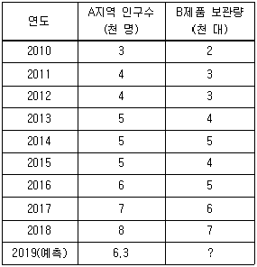
- 5.1
- 5.2
- 5.3
- 5.4
- 5.5
(정답률: 28%)
19. ISO의 국제표준규격 20ft와 40ft 컨테이너 내부에 각 1단으로 적재할 수 있는 T-11형 표준 파렛트 최대 개수의 합은?
- 24매
- 30매
- 36매
- 42매
- 48매
(정답률: 57%)
20. 창고에 관한 설명으로 옳지 않은 것은?
- 자가창고의 장점은 최적의 창고설계가 가능하다는 것이다.
- 영업창고는 작업시간에 대한 탄력성이 적다는 것이 단점이다.
- 리스창고는 국가 및 지방자치단체가 공익을 목적으로 건설한 창고이다.
- 정온창고는 공조기 등으로 온도와 습도를 일정하게 조정가능한 창고이다.
- 기계화창고는 입하에서 출하까지 자동화되고, 유닛로드로 처리되는 창고이다.
(정답률: 70%)
21. 다음 중 정성적 수요예측기법으로 옳은 것을 모두 고른 것은?
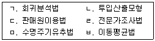
- ㄱ, ㄴ, ㄷ
- ㄱ, ㄴ, ㄹ
- ㄱ, ㅁ, ㅂ
- ㄴ, ㄹ, ㅂ
- ㄷ, ㄹ, ㅁ
(정답률: 70%)
22. 다음과 같이 보관 실적치가 주어졌을 때, 단순이동평균법으로 예측한 9월의 수요는? (단, 이동기간 n=4를 적용하며, 계산한 값은 소수점 둘째자리에서 반올림함)
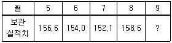
- 155.1
- 155.2
- 155.3
- 155.4
- 155.5
(정답률: 68%)
23. 다음과 같은 A회사의 연도별 물동량 처리실적과 예측치가 있다고 할 때, 2018년의 처리실적에 가장 근접한 예측치를 제시할 수 있는 수요예측기법은?
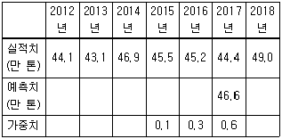
- 4년간 이동평균법
- 5년간 이동평균법
- 3년간 가중이동평균법
- 평활상수(α) 0.2인 지수평활법
- 평활상수(α) 0.4인 지수평활법
(정답률: 38%)
24. JIT(Just In Time) 시스템의 특징에 해당하는 것을 모두 고른 것은?
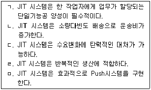
- ㄱ, ㄴ, ㄷ
- ㄱ, ㄷ, ㄹ
- ㄱ, ㄹ, ㅁ
- ㄴ, ㄷ, ㄹ
- ㄴ, ㄹ, ㅁ
(정답률: 62%)
25. A창고는 처리실적이 지속적으로 저조하였으나, 최근 창고시스템의 고질적인 결함을 개선하면서 처리실적이 급격하게 증가하였다. 이 경우 차기 처리실적을 예측하기 위한 가장 적합한 수요예측방법은?
- 지수평활법
- 회귀분석법
- 투입산출모형
- 단순이동평균법
- 수명주기예측법
(정답률: 52%)
26. 하역의 원칙과 그에 관한 설명으로 옳지 않은 것을 모두 고른 것은?
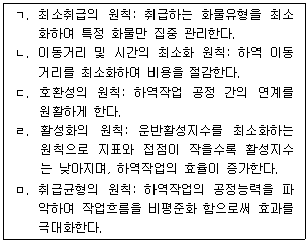
- ㄱ, ㄴ, ㄷ
- ㄱ, ㄷ, ㄹ
- ㄱ, ㄹ, ㅁ
- ㄴ, ㄷ, ㄹ
- ㄴ, ㄹ, ㅁ
(정답률: 63%)
27. 다음 중 Lift on-Lift off 방식의 하역기기가 아닌 것은?
- 지브 크레인(Jib Crane)
- 천장 크레인(Overhead Travelling Crane)
- 슬랫 크레인(Slat Crane)
- 케이블 크레인(Cable Crane)
- 컨테이너 크레인(Container Crane)
(정답률: 57%)
28. 하역시스템을 도입하는 목적에 관한 설명으로 옳지 않은 것은?
- 하역비용의 절감
- 노동환경의 개선
- 범용성과 융통성의 지양
- 에너지 또는 자원의 절감
- 고도 운전기능과 안전의 확보
(정답률: 52%)
29. 항공화물 탑재용기에 관한 설명으로 옳지 않은 것은?
- 항공파렛트는 1인치 이하의 알루미늄 합금으로 만들어진 평판이다.
- 항공파렛트는 화물을 특정 항공기의 내부모양과 일치하도록 탑재 후 망(net)이나 띠(strap)로 묶을 수 있도록 고안된 장비이다.
- 항공컨테이너는 별도의 보조장비 없이 항공기 화물실에 탑재 및 고정이 가능하도록 제작된 용기이다.
- 항공컨테이너는 탑재된 화물의 하중을 견딜 수 있는 강도로 제작되고 기체에 손상을 주지 않아야 한다.
- 항공컨테이너와 해상컨테이너는 호환 탑재가 가능하다.
(정답률: 74%)
30. 하역에 관한 설명으로 옳지 않은 것은?
- 하역은 화물에 대한 시간적 효용과 장소적 효용 창출을 지원한다.
- 하역은 노동집약적인 물류분야 중의 하나였으나, 최근 기술 발전에 따라 개선되고 있다.
- 하역은 각종 운반수단에 화물을 싣고 내리기, 보관화물의 창고 내 운반과 격납, 피킹, 분류, 구색관리 등의 작업과 부수작업을 포함한다.
- 하역은 생산에서 소비까지 전 유통과정의 효용창출과 직접적인 관련이 있으며, 하역의 합리화는 물류합리화에 큰 의미를 가진다.
- 하역은 화물 또는 생산품의 저장과 이동을 말하며, 제조와 품질검사 공정을 포함한다.
(정답률: 69%)
31. 하역작업에 관한 설명으로 옳은 것을 모두 고른 것은?
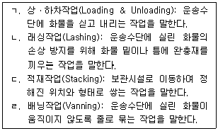
- ㄱ, ㄴ
- ㄱ, ㄷ
- ㄱ, ㄹ
- ㄴ, ㄷ
- ㄴ, ㄹ
(정답률: 74%)
32. 단위적재시스템(ULS: Unit Load System)에 관한 설명으로 옳지 않은 것은?
- 단위적재시스템은 제품이 경박단소화 되면서 그 중요성이 점차 감소하고 있다.
- 단위적재시스템을 통해 시간과 비용이 절감되고, 도난 등의 피해가 감소하고 있다.
- 단위적재시스템을 구축하기 위해서는 수송장비, 하역장비, 창고시설 등의 표준화가 선행되어야 한다.
- 단위적재시스템을 구축하기 위해서는 포장단위, 거래단위의 표준화가 선행되어야 한다.
- 단위적재시스템은 하역의 기계화를 통한 신속한 적재로 운송수단의 회전율을 향상시킨다.
(정답률: 78%)
33. 파렛트에 관한 설명으로 옳지 않은 것은?
- 파렛트는 국제표준규격이 정해져 있다.
- 파렛트는 물류합리화의 시발점이 되고 있다.
- 파렛트를 물류활동의 모든 과정에 사용하여 작업효율을 향상시키는 것을 일관파렛트화(Palletization)라고 한다.
- 파렛트는 단위적재시스템의 대표적인 용기로 운송, 보관, 하역 등의 효율을 증대시키는데 적합하다.
- 우리나라 국가표준(KS) 운송용 파렛트에는 T-11형이 있으며, 이는 미국과 유럽의 표준 파렛트와도 동일한 규격이다.
(정답률: 74%)
34. 오더 피킹(Order Picking)에 관한 설명으로 옳지 않은 것은?
- 존 피킹(Zone Picking)은 여러 피커가 작업범위 공간을 정해두고, 본인이 담당하는 선반의 물품만을 골라 피킹하는 방식이다.
- 릴레이 피킹(Relay Picking)은 피킹전표 중에서 자기가 담당하는 종류만을 피킹하고, 다음 피커에게 넘겨주는 방식이다.
- 피킹 빈도가 높은 물품일수록 피커의 접근이 쉬운 장소에 저장하는 것이 바람직하다.
- 파렛트 슬라이딩 랙(Sliding Rack)은 선입선출이 가능하고, 오더 피킹의 효율성이 높은 방식이다.
- 드라이브 인 랙(Drive-in Rack)은 다품종 소량의 제품, 회전율이 높은 제품에 적합한 방식이다.
(정답률: 71%)
35. 컨베이어에 관한 설명으로 옳지 않은 것은?
- 벨트(Belt) 컨베이어: 연속적으로 움직이는 벨트를 사용하여 벨트 위에 화물을 싣고 운반하는 기기
- 롤러(Roller) 컨베이어: 롤러 및 휠을 운반 방향으로 병렬시켜 화물을 운반하는 기기
- 진동(Vibrating) 컨베이어: 철판의 진동을 통해 부품 등을 운반하는 기기
- 스크루(Screw) 컨베이어: 스크루 상에 철판을 삽입하고 이를 회전시켜 액체화물 종류를 운반하는 기기
- 플로우(Flow) 컨베이어: 파이프 속 공기나 물의 흐름을 이용하여 화물을 운반하는 기기
(정답률: 49%)
36. 포장에 관한 설명으로 옳지 않은 것은?
- 포장의 간소화로 포장비를 절감할 수 있다.
- 포장은 생산의 마지막 단계이며, 물류의 시작단계에 해당된다.
- 한국산업표준(KS)에 따르면 포장은 낱포장(Item packaging), 속포장(Inner packaging), 겉포장(Outer packaging)으로 분류된다.
- 상업포장은 상품의 파손을 방지하고, 물류비를 절감하는데 초점을 두고 있다.
- 반강성포장(Semi-rigid packaging)의 포장재료는 골판지상자, 접음상자, 플라스틱 보틀 등이다.
(정답률: 71%)
37. 파렛트의 적재방법 중에서 동일한 단에서는 물품을 가로ㆍ세로로 조합해 쌓으며, 다음 단에서는 방향을 180° 바꾸어 교대로 겹쳐 쌓는 방법은?
- 블록(Block)형 적재
- 벽돌(Brick)형 적재
- 핀휠(Pinwheel) 적재
- 스프리트(Split) 적재
- 교호(Alternative)열 적재
(정답률: 53%)
38. 물류모듈(Module)에 관한 설명으로 옳지 않은 것은?
- 물류모듈의 치수구조는 분할계열치수와 배수계열치수로 구분할 수 있다.
- 운송의 모듈화 대상으로는 트럭이나 화차, 컨테이너 선박 등과 같은 운송 수단들이 해당된다.
- 분할계열치수는 PVS(Plan View Size: 1,140 × 1,140 mm)를 기준으로 한 치수를 의미한다.
- 물류모듈이란 물류합리화와 표준화를 위해 기준척도 및 단위구성 요소를 수치적으로 연계시키는 것을 말한다.
- 물류모듈화란 물류시스템을 구성하는 각종 요소인 물류시설 및 장비들의 규격이나 치수가 일정한 배수나 분할관계로 집합되어 있는 집합체를 말한다.
(정답률: 48%)
39. 다음의 화물 취급표시가 의미하는 것은?
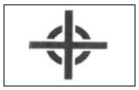
- Stacking Limitation
- Protect from Heat
- Unstable
- Center of Gravity
- Do Not Roll
(정답률: 75%)
40. 파렛트 풀(Pallet Pool)에 관한 설명으로 옳지 않은 것은?
- 파렛트의 장거리 회송이 필요하다.
- 파렛트의 규격 표준화가 필요하다.
- 물류합리화와 물류비 절감이 가능하다.
- 지역적, 계절적 수요에 대응이 가능하다.
- 파렛트 규격에 맞는 포장규격의 변경이 필요하다.
(정답률: 60%)
2과목: 물류관련법규
41. 물류정책기본법령상 환경친화적 운송수단으로의 전환촉진에 관한 설명으로 옳지 않은 것은?
- 시장ㆍ군수는 국토교통부장관의 승인을 받아 물류기업 및 화주기업에 대하여 환경친화적 운송수단으로의 전환을 권고하고 지원할 수 있다.
- 화물자동차ㆍ철도차량ㆍ선박ㆍ항공기 등의 배출가스를 저감하기 위하여 시설ㆍ장비투자를 하는 경우 환경친화적 운송수단으로의 전환의 지원대상이 될 수 있다.
- 환경친화적인 연료를 사용하는 운송수단으로 전환하기 위하여 시설ㆍ장비투자를 하는 경우 환경친화적 운송수단으로의 전환의 지원대상이 될 수 있다.
- 환경친화적 운송수단으로의 전환에 필요한 자금의 보조ㆍ융자 및 융자 알선은 환경친화적 운송수단으로의 전환의 지원내용에 해당한다.
- 환경친화적 운송수단으로의 전환에 필요한 교육, 컨설팅 및 정보의 제공은 환경친화적 운송수단으로의 전환의 지원내용에 해당한다.
(정답률: 49%)
42. 물류정책기본법령상 물류공동화ㆍ자동화 촉진을 위한 지원에 관한 설명으로 옳은 것은?
- 시ㆍ도지사는 물류공동화를 추진하는 물류 관련 단체에 대하여 예산의 범위에서 필요한 자금을 지원할 수 있다.
- 산업통상자원부장관은 물류기업이 물류공동화를 추진하는 경우 물류 관련 단체와 공동으로 추진하도록 명할 수 있다.
- 시ㆍ도지사는 화주기업이 물류자동화를 위하여 물류시설 및 장비를 확충하려는 경우 필요한 자금을 지원하여야 한다.
- 국토교통부장관ㆍ해양수산부장관ㆍ산업통상자원부장관은 물류공동화ㆍ물류자동화를 위하여 필요한 경우 협의없이 지원조치를 마련할 수 있다.
- 시ㆍ도지사가 물류공동화를 추진하는 물류기업이나 화주기업에 대하여 필요한 자금을 지원하려는 경우 그 내용을 국가물류기본계획에 반영하여야 한다.
(정답률: 57%)
43. 「물류정책기본법」상 국제물류사업의 촉진 및 지원에 관한 조문의 일부이다. ( )에 들어갈 내용을 바르게 나열한 것은?
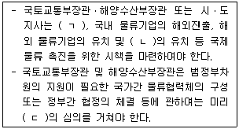
- ㄱ: 국제물류협력체계 구축, ㄴ: 국제물류사업, ㄷ: 국가물류정책위원회
- ㄱ: 국제물류협력체계 구축, ㄴ: 환적(換積)화물, ㄷ: 국가물류정책위원회
- ㄱ: 국제물류협력체계 구축, ㄴ: 환적(換積)화물, ㄷ: 국무회의
- ㄱ: 물류 관련 국제표준화, ㄴ: 환적(換積)화물, ㄷ: 국가물류정책위원회
- ㄱ: 물류 관련 국제표준화, ㄴ: 국제물류사업, ㄷ: 국무회의
(정답률: 61%)
44. 물류정책기본법령상 물류회계의 표준화에 관한 설명으로 옳은 것은?
- 국토교통부장관은 물류기업 및 화주기업의 물류비 산정기준 및 방법 등을 표준화하기 위하여 기업물류비 산정지침을 작성하여 고시하여야 한다.
- 해양수산부장관은 화주기업이 기업물류비 산정지침에 따라 물류비를 관리하도록 하는 의무를 부과할 수 있다.
- 산업통상자원부장관은 국토교통부장관과 협의하여 기업물류비 산정지침에 따라 물류비를 계산ㆍ관리하는 물류기업에 대하여는 필요한 행정적 지원을 하여야 한다.
- 국토교통부장관은 기업물류비 산정지침에 따라 물류비를 계산ㆍ관리하는 화주기업에 대하여 재정적 지원을 할 수는 없다.
- 물류비 관련 용어 및 개념에 대한 정의는 기업물류비 산정지침에 포함되어야 하는 사항이 아니다.
(정답률: 71%)
45. 물류정책기본법령상 전자문서 및 물류정보에 관한 설명으로 옳은 것은?
- 단위물류정보망 또는 전자문서를 변작(變作)하려는 자는 국토교통부장관의 허가를 받아야 한다.
- 국가물류통합정보센터운영자 또는 단위물류정보망 전담기관은 전자문서 및 물류 정보를 3년간 보관하여야 한다.
- 국토교통부장관은 해양수산부장관 및 산업통상자원부장관과 협의하여 표준전자문서의 개발ㆍ보급계획을 수립하여야 한다.
- 국가물류통합정보센터운영자는 어떠한 경우에도 전자문서를 공개하여서는 아니 된다.
- 단위물류정보망 전담기관은 물류정보에 대하여 직접적인 이해관계를 가진 자가 동의하는 경우에는 언제든지 물류정보를 공개할 수 있다.
(정답률: 54%)
46. 물류정책기본법령상 우수물류기업의 인증에 관한 설명으로 옳지 않은 것은?
- 국토교통부장관 및 해양수산부장관은 소관 물류기업을 각각 우수물류기업으로 인증할 수 있다.
- 우수물류기업 선정을 위한 인증의 기준ㆍ절차ㆍ방법 등에 필요한 사항은 국토교통부와 해양수산부의 공동부령으로 정한다.
- 국토교통부장관 또는 해양수산부장관은 인증우수물류기업이 인증요건을 유지하는지에 대하여 공동부령으로 정하는 바에 따라 점검하여야 한다.
- 인증우수물류기업 인증마크의 도안 및 표시방법은 국토교통부장관의 동의를 얻어 산업통상자원부장관이 정하여 고시한다.
- 국가ㆍ지방자치단체 또는 공공기관은 인증우수물류기업에 대하여 재정적 지원을 할 수 있다.
(정답률: 55%)
47. 물류정책기본법령상 물류현황조사지침에 포함되어야 하는 사항에 해당하는 것을 모두 고른 것은?
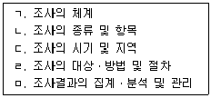
- ㄱ, ㄴ, ㄷ
- ㄱ, ㄷ, ㄹ
- ㄱ, ㄴ, ㄹ, ㅁ
- ㄴ, ㄷ, ㄹ, ㅁ
- ㄱ, ㄴ, ㄷ, ㄹ, ㅁ
(정답률: 68%)
48. 물류정책기본법령상 물류계획에 관한 설명으로 옳지 않은 것은?
- 국토교통부장관 및 해양수산부장관은 10년 단위의 국가물류기본계획을 5년마다 공동으로 수립하여야 한다.
- 국가물류기본계획을 수립하려는 경우에는 관계 중앙행정기관의 장 및 시ㆍ도지사와의 협의를 거쳐야 한다.
- 특별시장 및 광역시장은 10년 단위의 지역물류기본계획을 5년마다 수립하여야 한다.
- 지역물류기본계획은 국가물류기본계획에 배치되지 아니하여야 한다.
- 지역물류기본계획을 수립하려는 경우에는 물류시설분과위원회의 심의를 거쳐 해양수산부장관의 승인을 받아야 한다.
(정답률: 60%)
49. 물류시설의 개발 및 운영에 관한 법령상 물류시설개발종합계획에 관한 설명으로 옳지 않은 것은?
- 국토교통부장관은 물류시설개발종합계획을 5년 단위로 수립하여야 한다.
- 용수ㆍ에너지ㆍ통신시설 등 기반시설에 관한 사항도 물류시설개발종합계획에 포함되어야 한다.
- 물류시설개발종합계획에서 물류시설별 물류시설용지면적의 100분의 10 이상으로 물류시설의 수요ㆍ공급계획을 변경하려는 때에는 물류시설분과위원회의 심의를 거쳐야 한다.
- 국토교통부장관은 물류시설개발종합계획을 수립한 때에는 이를 관보에 고시하여야 한다.
- 시ㆍ도지사는 해양수산부장관에게 물류시설개발종합계획의 변경을 청구할 수 있다.
(정답률: 57%)
50. 물류시설의 개발 및 운영에 관한 법령상 용어에 관한 설명으로 옳은 것은?
- 물류의 공동화ㆍ자동화 및 정보화를 위한 시설은 물류시설에 속하지 않는다.
- 「유통산업발전법」상 집배송시설 및 공동집배송센터를 경영하는 사업은 복합물류터미널사업에 속한다.
- 화물의 운송ㆍ포장ㆍ보관ㆍ판매ㆍ정보처리 등을 위하여 일반물류단지 안에 설치되는「약사법」상 의약품 도매상의 창고 및 영업소시설은 일반물류단지시설에 속한다.
- 화물의 집화ㆍ하역 및 이와 관련된 분류ㆍ포장ㆍ보관ㆍ가공ㆍ조립 또는 통관 등에 필요한 기능을 갖춘 시설물이지만 가공ㆍ조립 시설의 전체 바닥면적 합계가 물류터미널의 전체 바닥면적 합계의 5분의 1인 경우에는 물류터미널에 속하지 않는다.
- 도시첨단물류단지를 조성하기 위하여 시행하는 하수도의 건설사업은 물류단지개발사업에 속하지 않는다.
(정답률: 52%)
51. 물류시설의 개발 및 운영에 관한 법령상 물류터미널사업자가 설치한 물류터미널의 원활한 운영에 필요한 기반시설의 설치에 필요한 예산을 지방자치단체가 지원할 수 없는 경우는?
- 「도로법」제2조제1호에 따른 도로의 설치
- 「철도산업발전기본법」제3조제1호에 따른 철도의 설치
- 「수도법」제3조제17호에 따른 수도시설의 설치
- 「폐기물관리법」제2조제8호에 따른 폐기물처리시설의 설치
- 「물환경보전법」제2조제12호에 따른 수질오염방지시설의 설치
(정답률: 34%)
52. 물류시설의 개발 및 운영에 관한 법령상 복합물류터미널사업자가 등록한 사항에 대하여 변경등록을 하여야 하는 경우는?
- 영업소 명칭의 변경
- 영업소 위치의 변경
- 복합물류터미널 설비의 변경
- 복합물류터미널 구조의 변경
- 복합물류터미널 부지 면적의 10분의 1의 변경
(정답률: 63%)
53. 물류시설의 개발 및 운영에 관한 법령상 복합물류터미널사업에 관한 설명으로 옳은 것은?
- 특별법에 따라 설립된 법인은 복합물류터미널사업을 경영할 수 없다.
- 국가가 직접 복합물류터미널사업을 경영할 수는 없다.
- 「상법」에 따라 설립된 법인의 임원이 외국인인 경우 그 법인은 복합물류터미널사업자의 등록을 할 수 없다.
- 등록신청을 하려는 자는 복합물류터미널의 부지 및 설비의 배치를 표시한 축척 1000분의 1인 평면도를 제출하여야 한다.
- 복합물류터미널사업의 등록기준이 되는 부지 면적은 3만3천제곱미터 이상이다.
(정답률: 67%)
54. 물류시설의 개발 및 운영에 관한 법령상 공공기관이 시행자로서 새로이 설치한 공공시설 중 그 시설을 관리할 국가 또는 지방자치단체에게 무상 귀속되는 시설로 옳은 것을 모두 고른 것은?
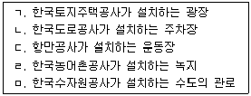
- ㄱ, ㅁ
- ㄴ, ㄷ
- ㄱ, ㄹ, ㅁ
- ㄴ, ㄷ, ㄹ, ㅁ
- ㄱ, ㄴ, ㄷ, ㄹ, ㅁ
(정답률: 40%)
55. 물류시설의 개발 및 운영에 관한 법령상 물류단지의 개발 및 운영에 관한 설명으로 옳은 것은?
- 100만 제곱미터의 일반물류단지를 지정하는 경우 국가물류정책위원회의 심의를 거쳐야 한다.
- 일반물류단지개발계획을 수립할 때까지 일반물류단지개발사업 시행자가 확정되지 아니하였다면 일반물류단지를 지정할 수 없다.
- 국토교통부장관이 일반물류단지개발계획 중 일반물류단지개발사업 시행자를 변경하려는 경우 관할 시ㆍ도지사의 의견을 들어야 한다.
- 물류단지개발지침의 내용에는 '문화재의 보존을 위하여 고려할 사항'이 포함되지 않는다.
- 국토교통부장관은 무분별한 물류단지 개발을 방지하고 국토의 효율적 이용을 위하여 시ㆍ도지사와 협의하여 물류단지 실수요 검증을 실시하여야 하고 실수요검증위원회의 자문을 받아야 한다.
(정답률: 20%)
56. 물류시설의 개발 및 운영에 관한 법령상 사업의 휴업ㆍ폐업에 관한 설명으로 옳은 것은?
- 복합물류터미널사업자가 그 사업의 전부를 폐업하려는 때에는 국토교통부장관의 허가를 받아야 한다.
- 복합물류터미널사업자인 법인이 합병의 사유로 해산하는 경우에는 그 청산인은 미리 그 사실을 국토교통부장관에게 신고하여야 한다.
- 복합물류터미널사업의 일부를 휴업하는 경우 그 휴업기간은 1년을 초과할 수 없다.
- 복합물류터미널사업자가 폐업하려는 때에는 미리 그 취지를 영업소나 그 밖에 일반 공중이 보기 쉬운 곳에 게시하여야 한다.
- 복합물류터미널사업의 전부를 휴업하려는 자는 휴업하려는 날로부터 7일 이전에 신고서를 국토교통부장관에게 제출하여야 한다.
(정답률: 59%)
57. 화물자동차 운수사업법령상 운송사업자가 허가사항을 변경하는 경우 변경신고를 하여야 하는 사항을 모두 고른 것은?
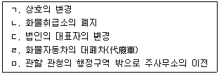
- ㄱ, ㄴ, ㅁ
- ㄱ, ㄹ, ㅁ
- ㄴ, ㄷ, ㄹ
- ㄱ, ㄴ, ㄷ, ㄹ
- ㄱ, ㄴ, ㄷ, ㄹ, ㅁ
(정답률: 48%)
58. 화물자동차 운수사업법령상 안전운행의 확보, 운송질서의 확립 및 화주의 편의를 도모하기 위하여 필요하다고 인정될 경우 운송가맹사업자에 대하여 발령될 수 있는 개선명령에 해당하지 않는 것은?
- 감차 조치
- 화물자동차의 구조변경
- 운송시설의 개선
- 운송약관의 변경
- 화물의 안전운송을 위한 조치
(정답률: 48%)
59. 화물자동차 운수사업법령상 자가용 화물자동차의 사용에 관한 설명으로 옳은 것은? (단, 조례는 고려하지 않음)
- 천재지변으로 인하여 수송력 공급을 긴급히 증가시킬 필요가 있는 경우 자가용 화물자동차의 소유자는 시ㆍ도지사의 허가를 받아 자가용 화물자동차를 유상으로 화물운송용으로 제공할 수 있다.
- 자가용 화물자동차의 소유자가 자가용 화물자동차를 사용하여 화물자동차 운송사업을 경영한 경우 시ㆍ도지사는 1년 이내의 기간을 정하여 그 자동차의 사용을 제한하거나 금지할 수 있다.
- 영농조합법인이 소유하는 자가용 화물자동차에 대한 유상운송 허가기간은 2년 이내로 한다.
- 시ㆍ도지사는 영농조합법인의 유상운송 허가기간의 연장을 허가할 수 없다.
- 자가용 화물자동차의 대폐차를 하려는 자는 국토교통부장관의 허가를 받아야 한다.
(정답률: 57%)
60. 화물자동차 운수사업법령상 운송약관에 관한 설명으로 옳지 않은 것은?
- 운송약관의 변경신고에 대한 수리 여부는 변경신고를 받은 날부터 3일 이내에 신고인에게 통지되어야 한다.
- 국토교통부장관이 수리기간 내에 운송약관 신고수리 여부를 신고인에게 통지하지 아니하면 수리기간이 끝난 날에 신고를 수리한 것으로 본다.
- 운송약관의 신고 또는 변경신고는 이 법 제48조에 따른 협회로 하여금 대리하게 할 수 있다.
- 운송약관에는 손해배상 및 면책에 관한 사항을 적어야 한다.
- 운송사업자가 화물자동차 운송사업의 허가를 받는 때에 표준약관의 사용에 동의하면 운송약관을 신고한 것으로 본다.
(정답률: 57%)
61. 화물자동차 운수사업법령상 화물자동차 운송사업에서 여객자동차 운송사업용 자동차에 싣기 부적합하여 화주가 밴형 화물자동차에 탈 때 함께 실을 수 있는 화물의 기준으로 옳은 것을 모두 고른 것은?
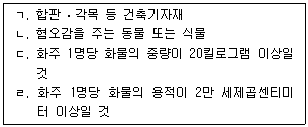
- ㄱ, ㄴ
- ㄴ, ㄹ
- ㄷ, ㄹ
- ㄱ, ㄴ, ㄷ
- ㄱ, ㄷ, ㄹ
(정답률: 57%)
62. 화물자동차 운수사업법령상 운송주선사업에 관한 설명으로 옳지 않은 것은?
- 일반화물운송주선사업의 허가신청서에는 상용인부 2명 이상의 고용을 증명하는 서류를 첨부하여야 한다.
- 운송주선사업의 허가사항에 대한 변경신고의 수리 여부는 변경신고를 받은 날부터 5일 이내에 신고인에게 통지되어야 한다.
- 운송주선사업자는 자기 명의로 다른 사람에게 화물자동차 운송주선사업을 경영하게 할 수 없다.
- 운송주선사업자가 운송가맹사업자에게 화물의 운송을 주선하는 행위는 이 법에 따른 재계약ㆍ중개 또는 대리로 보지 아니한다.
- 운송가맹점인 운송주선사업자는 자기가 가입한 운송가맹사업자에게 소속된 운송 가맹점에 대하여 화물운송을 주선하여서는 아니 된다.
(정답률: 30%)
63. 화물자동차 운수사업법령상 적재물배상보험등에 관한 설명으로 옳은 것은?
- 최대 적재량이 3톤이고 총 중량이 5톤인 화물자동차를 소유하고 있는 운송사업자는 적재물배상 책임보험에 가입하여야 한다.
- 이사화물을 취급하는 운송주선사업자는 운송사업자의 책임에 따른 손해배상 책임을 이행하기 위하여 적재물배상 책임보험 또는 공제에 가입하여야 한다.
- 화물자동차 운송사업의 허가가 취소된 경우에도 책임보험계약등의 전부 또는 일부를 해제하거나 해지하여서는 아니 된다.
- 화물자동차 운송가맹사업자가 감차 조치 명령을 받은 경우에도 책임보험계약등 의 전부 또는 일부를 해제하거나 해지하여서는 아니 된다.
- 보험회사등은 자기와 책임보험계약등을 체결하고 있는 보험등 의무가입자에게 그 계약종료일 50일 전까지 그 계약이 끝난다는 사실을 알려야 한다.
(정답률: 62%)
64. 화물자동차 운수사업법령상 운송사업의 허가를 취소하여야 하는 경우는?
- 화물자동차 교통사고와 관련하여 거짓으로 보험금을 청구하여 금고 이상의 형을 선고받고 그 형이 확정된 경우
- 정당한 사유 없이 운송계약의 인수를 거부한 경우
- 화물운송 종사자격이 없는 자에게 화물을 운송하게 한 경우
- 3대의 화물자동차를 소유한 운송사업자가 중대한 교통사고로 1명 이상의 사상자를 발생하게 한 경우
- 화물자동차 소유 대수가 2대 이상인 운송사업자가 영업소 설치 허가를 받지 아니하고 주사무소 외의 장소에서 상주하여 영업한 경우
(정답률: 64%)
65. 「화물자동차 운수사업법」상 위ㆍ수탁계약의 갱신 등에 관한 조문의 일부이다. ( )에 들어갈 숫자를 바르게 나열한 것은?
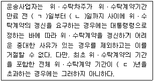
- ㄱ: 120, ㄴ: 30, ㄷ: 5
- ㄱ: 120, ㄴ: 60, ㄷ: 6
- ㄱ: 150, ㄴ: 30, ㄷ: 5
- ㄱ: 150, ㄴ: 60, ㄷ: 5
- ㄱ: 150, ㄴ: 60, ㄷ: 6
(정답률: 32%)
66. 화물자동차 운수사업법령상 사업자단체에 관한 설명으로 옳지 않은 것은?
- 공제조합을 설립하려면 공제조합의 조합원 자격이 있는 자의 10분의 1 이상이 발기하여야 한다.
- 파산선고를 받고 복권된 사람은 공제조합의 운영위원회의 위원이 될 수 없다.
- 운송사업자로 구성된 협회, 운송주선사업자로 구성된 협회 및 운송가맹사업자로 구성된 협회는 각각 연합회를 설립할 수 있다.
- 연합회가 공제사업을 하는 경우의 공제조합 운영위원회 위원은 시ㆍ도별 협회의 대표 전원을 포함하여 37명 이내로 한다.
- 공제조합이 조합에 고용된 자의 업무상 재해로 인한 손실을 보상하기 위한 공제 사업을 하려면 공제규정을 정하여 국토교통부장관의 인가를 받아야 한다.
(정답률: 52%)
67. 유통산업발전법령상 공동집배송센터에 관한 설명으로 옳은 것을 모두 고른 것은?
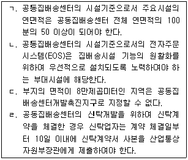
- ㄱ, ㄴ
- ㄱ, ㄷ
- ㄴ, ㄷ
- ㄷ, ㄹ
- ㄱ, ㄴ, ㄹ
(정답률: 25%)
68. 유통산업발전법령상 대규모점포등에 관한 설명으로 옳지 않은 것은?
- 특별자치시장은 대규모점포등의 개설등록을 하려는 대규모점포등의 위치가 전통상업보존구역에 있을 때에는 등록을 제한하거나 조건을 붙일 수 있다.
- 개설등록을 하지 아니하고 대규모점포등을 개설한 자는 1년 이하의 징역 또는 3천만원 이하의 벌금에 처한다.
- 전통상업보존구역의 지정과 관련된 규정은 2020년 11월 23일까지 그 효력을 가진다.
- 대규모점포등관리자는 관리규정을 개정하려는 경우 해당 인터넷 홈페이지에 제안내용을 공고하고 입점상인들에게 개별적으로 통지하여야 한다.
- 대규모점포등의 영업을 정당한 사유 없이 6개월 간 계속하여 휴업한 경우는 대규모점포등의 등록 취소 사유에 해당한다.
(정답률: 26%)
69. 유통산업발전법령상 유통업상생발전협의회(이하 “협의회”라 함)에 관한 설명으로 옳지 않은 것은?
- 협의회는 회장 1명을 포함한 9명 이내의 위원으로 구성한다.
- 해당 지역의 소비자단체의 대표 또는 주민단체의 대표는 협의회의 위원이 될 수 있다.
- 협의회 위원의 임기는 2년으로 한다.
- 협의회의 회의는 재적위원 3분의 2 이상의 출석으로 개의하고, 출석위원 과반수의 찬성으로 의결한다.
- 협의회는 분기별로 1회 이상 개최하는 것을 원칙으로 한다.
(정답률: 39%)
70. 유통산업발전법령상 대규모점포 개설등록 내용의 변경등록 사항이 아닌 것은?
- 종사자수 등 인력관리계획의 변경
- 법인 명칭의 변경
- 법인 소재지의 변경
- 업태 변경
- 개설등록(매장면적을 변경등록한 경우에는 변경등록) 당시 매장면적의 10분의 1 이상의 변경
(정답률: 47%)
71. 유통산업발전법령상 유통산업의 경쟁력 강화에 관한 설명으로 옳은 것은?
- 상점가진흥조합은 사업조합으로 설립할 수 없다.
- 상점가진흥조합은 조합원의 자격이 있는 자 중 같은 업종을 경영하는 자가 3분의 1 이상인 경우에는 그 같은 업종을 경영하는 자의 5분의 3 이상의 동의를 받아 결성할 수 있다.
- 「중소기업기본법」에 따른 중소기업자가 아닌 자도 상점가진흥조합의 조합원이 될 수 있다.
- 지방자치단체의 장은 체인사업자가 유통관리사의 고용 촉진 사업을 추진하는 경우 예산의 범위에서 필요한 자금을 지원할 수 있다.
- 지방자치단체가 중소유통공동도매물류센터를 건립하여 운영을 위탁하는 경우에는 해당 중소유통공동도매물류센터의 매출액의 1천분의 10 이내에서 시설 및 장비의 이용료를 징수할 수 있다.
(정답률: 50%)
72. 항만운송사업법령상 항만용역업에 속하지 않는 것은?
- 본선을 경비하는 사업
- 선박을 소독하는 사업
- 선박용 연료를 공급하는 사업
- 선박에서 사용하는 맑은 물을 공급하는 사업
- 통선으로 본선과 육지 간의 연락을 중계하는 사업
(정답률: 28%)
73. 「항만운송사업법」상 검수사등에 관한 조문의 일부이다. ( )에 들어갈 것을 바르게 나열한 것은?
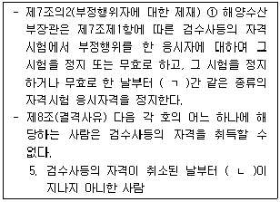
- ㄱ: 2년, ㄴ: 2년
- ㄱ: 2년, ㄴ: 3년
- ㄱ: 3년, ㄴ: 2년
- ㄱ: 3년, ㄴ: 3년
- ㄱ: 5년, ㄴ: 3년
(정답률: 50%)
74. 항만운송사업법령상 항만운송관련사업에 관한 설명으로 옳은 것은?
- 선용품공급업을 하려는 자는 해양수산부장관에게 등록하여야 한다.
- 선체, 기관 등 선박시설 및 설비를 수리, 교체 또는 도색하는 사업은 항만운송관련사업에 속한다.
- 항만용역업의 등록을 신청하려는 자는 부두시설 등 항만시설을 사용하는 경우에는 해당 항만시설의 사용허가서 사본을 제출하여야 한다.
- 해양수산부장관은 항만운송관련사업의 등록을 취소하는 경우 500만원 이하의 과징금을 병과할 수 있다.
- 항만운송관련사업자가 사업정지명령을 위반하여 그 정지기간에 사업을 계속한 경우에는 청문을 실시하지 않고 항만운송관련사업의 등록을 취소할 수 있다.
(정답률: 26%)
75. 철도사업법령상 철도사업의 관리에 관한 설명으로 옳지 않은 것은?
- 철도사업의 면허가 취소된 후 그 취소일부터 2년이 지나지 아니한 법인은 철도사업의 면허를 받을 수 없다.
- 철도사업자는 여객유치를 위한 기념행사의 경우에는 여객운임ㆍ요금을 감면할 수 없다.
- 국토교통부장관은 여객 운임의 상한을 지정하려면 미리 기획재정부장관과 협의하여야 한다.
- 철도사업자는 국토교통부장관이 지정하는 날 또는 기간에 운송을 시작하여야 하지만, 천재지변으로 운송을 시작할 수 없는 경우에는 국토교통부장관의 승인을 받아 날짜를 연기하거나 기간을 연장할 수 있다.
- 국토교통부장관이 철도사업의 면허를 발급하는 경우에는 철도의 공공성과 안전을 강화하고 이용자 편의를 증진시키기 위하여 필요한 부담을 붙일 수 있다.
(정답률: 62%)
76. 철도사업법령상 국토교통부장관의 인가를 받아야 하는 사항을 모두 고른 것은?
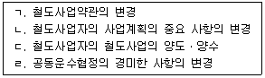
- ㄱ, ㄴ
- ㄱ, ㄷ
- ㄴ, ㄷ
- ㄷ, ㄹ
- ㄱ, ㄴ, ㄹ
(정답률: 43%)
77. 철도사업법령상 국유철도시설의 점용허가에 관한 설명으로 옳은 것은?
- 국유철도시설의 점용허가로 인하여 발생한 권리와 의무를 이전하려는 경우에는 한국철도공사 사장의 허가를 받아야 한다.
- 국유철도시설의 점용허가를 받은 자의 점용이 폐지된 경우 예외 없이 원상회복 의무가 면제된다.
- 점용료는 매년 1월말까지 당해연도 해당분을 선납하여야 하나 국토교통부장관이 부득이한 사유로 선납이 곤란하다고 인정하는 경우에는 그 납부기한을 따로 정할 수 있다.
- 점용허가를 받은 자가 점용허가의 기간만료에 따른 원상회복을 하지 아니하는 경우에는 「민사집행법」에 따라 시설물을 철거할 수 있다.
- 점용허가를 받은 철도 재산에 대한 원상회복의무가 면제되는 경우에도 시설물 등을 무상으로 국가에 귀속시킬 수 없다.
(정답률: 56%)
78. 철도사업법령상 전용철도에 관한 설명으로 옳은 것은?
- 전용철도를 운영하려는 자는 전용철도의 건설ㆍ운전ㆍ보안 및 운송에 관한 사항이 포함된 운영계획서를 첨부하여 국토교통부장관의 면허를 받아야 한다.
- 전용철도의 운영을 양수하려는 자는 국토교통부령이 정하는 바에 따라 국토교통부장관의 인가를 받아야 한다.
- 전용철도운영자가 그 운영의 전부 또는 일부를 휴업한 경우에는 1개월 이내에 국토교통부장관에게 신고하여야 한다.
- 전용철도운영자가 사망한 경우 상속인이 그 전용철도의 운영을 계속하려는 경우에는 피상속인이 사망한 날부터 2개월 이내에 국토교통부장관에게 등록하여야 한다.
- 이 법에 따라 전용철도 등록이 취소된 자는 취소일부터 6개월 이내에 전용철도를 등록할 수 있다.
(정답률: 31%)
79. 농수산물 유통 및 가격안정에 관한 법령상 농수산물의 생산조정 및 출하조절에 관한 설명으로 옳지 않은 것은?
- 농림축산식품부장관은 쌀과 보리를 제외한 농산물의 수급조절과 가격안정을 위하여 필요하다고 인정할 때에는 농산물가격안정기금으로 농산물을 비축할 수 있다.
- 수입이익금을 정하여진 기한까지 내지 아니하면 국세 체납처분의 예에 따라 징수할 수 있다.
- 기획재정부장관은 주요 농수산물의 수급조절과 가격안정을 위하여 필요하다고 인정할 때에는 해당 농산물의 파종기 이전에 예시가격을 결정할 수 있고, 이 경우 미리 농림축산식품부장관과 협의하여야 한다.
- 농림축산식품부장관은 국내 농산물 시장의 수급안정 및 거래질서 확립을 위하여 「관세법」에 따라 몰수되거나 국고에 귀속된 농산물을 이관받을 수 있다.
- 비축사업등의 실시과정에서 발생한 농산물의 감모(減耗)에 대해서는 농림축산식품부장관이 정하는 한도에서 비용으로 처리한다.
(정답률: 35%)
80. 농수산물 유통 및 가격안정에 관한 법령상 농림축산식품부장관의 권한에 해당하는 것은?
- 양곡부류와 청과부류를 종합한 중앙도매시장의 개설
- 시(市)가 개설자인 지방도매시장의 업무규정 변경에 대한 승인
- 경매사의 임면
- 수입이익금의 부과ㆍ징수
- 농수산물집하장의 설치ㆍ운영
(정답률: 31%)